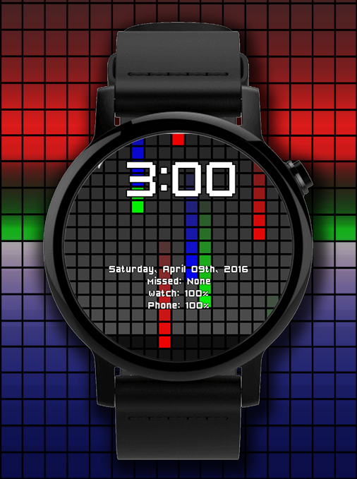

Moja ulubiona tarcza
Wielkim plusem posiadanie smartwatcha jest możliwość zmiany tarczy, kiedy tylko nam się podoba. Możemy żonglować nimi w zależności od nastroju, ale gdy znajdziemy tą ulubioną to zostanie ona z nami na dłużej.

Dlaczego warto zainstalować tarczę Color Pixel?
Możemy edytować ustawienia kolorów, mnie spodobał się domyślny, ale nic nie broni Ci zmienić je na pasujące Tobie odcienie. Dodatkowo możemy formatować sposób wyświetlania zegara i informacji oraz styl daty. Tarcza może informować nas o nieodebranych połączeniach.Jednym zdaniem:
Funkcjonalna i estetyczna tarcza, którą warto przetestować
Pobierz z Google Play

Wszystkie materiały pochodzą ze strony developera